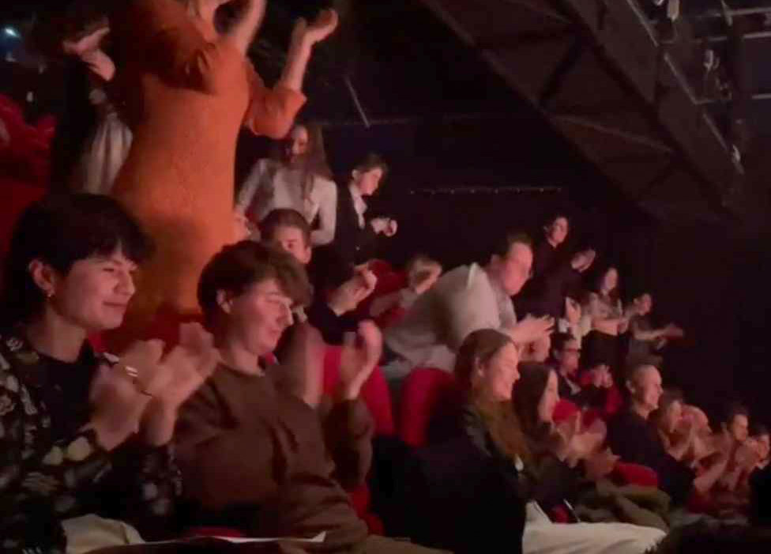
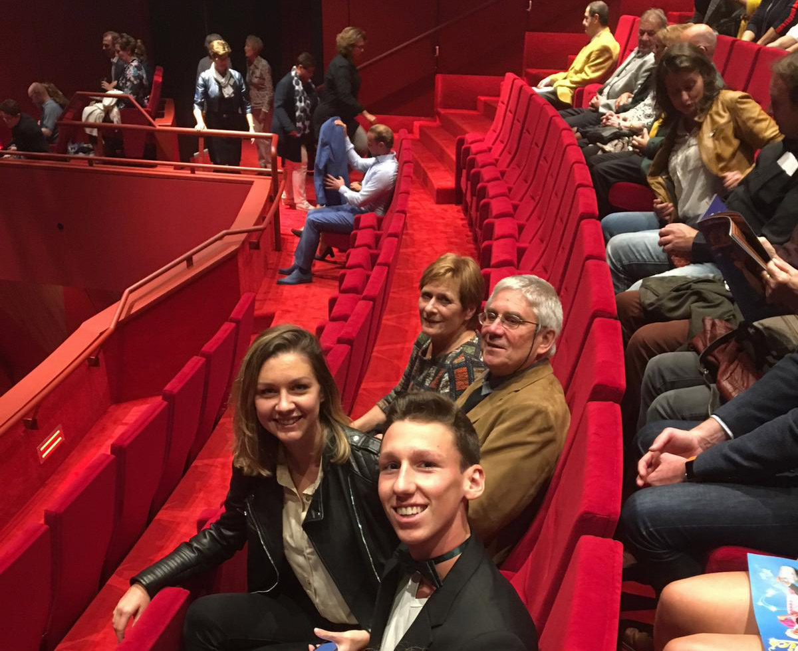
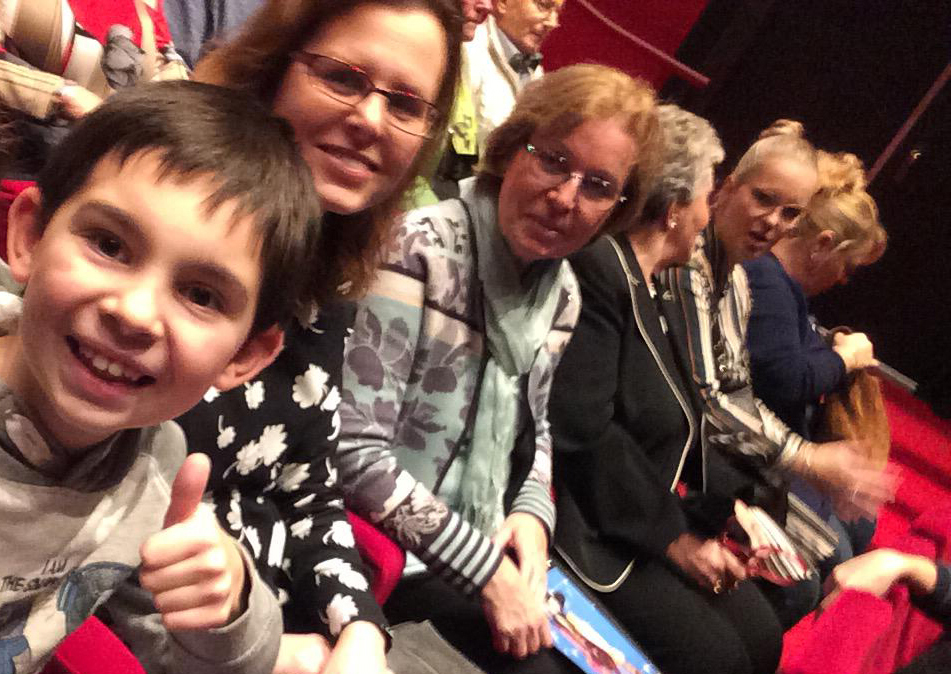
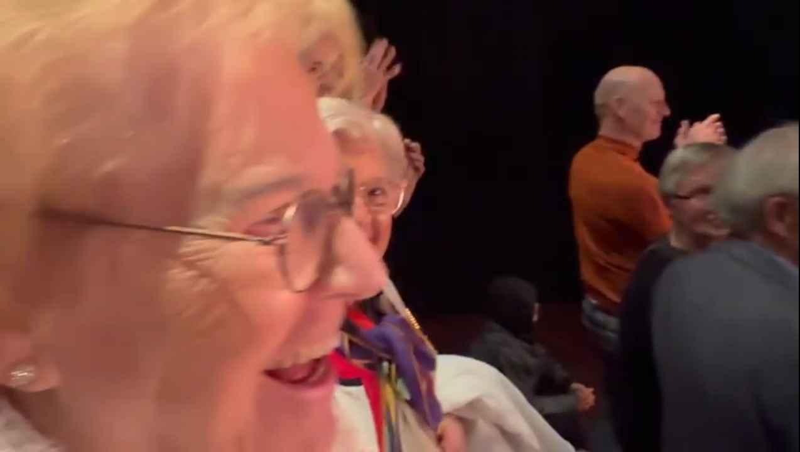
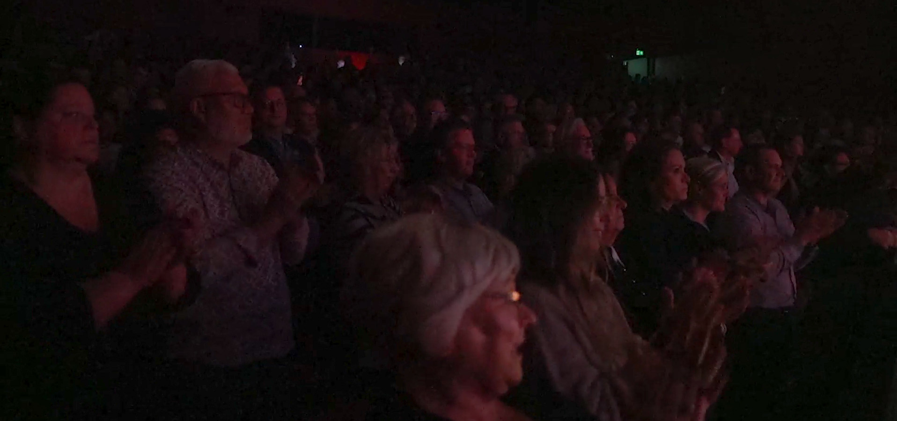

Helaas is het zo dat je binnenkort niet meer zo snel naar die magische plek kan en wil gaan. Het kabinet heeft namelijk besloten om de belasting op de culturele sector te verhogen van 9% naar 21% en het theater valt natuurlijk ook onder de culturele sector. Veel mensen hopen dat het kabinet deze plannen niet laat doorgaan want dit heeft genoeg negatieve gevolgen voor het theater en de theatermakers; veel mensen kunnen hierdoor hun baan kwijtraken als minder mensen naar het theater komen en het theater zelf maakt dan verlies. De groep waar het theater het meest naar kijkt om ze toch nog naar het theater te laten blijven komen zijn jongeren aangezien die het toekomstige publiek zijn. Dus hoe kunnen theatermakers toch van deze jongeren de aandacht trekken om straks naar het theater te kunnen komen als de belastingverhoging is ingegaan?
Jij gaat niet uit jezelf op de site van het theater kijken wat voor shows er spelen. Als het theater dus ervoor wil zorgen dat je naar het theater blijven komen dan moet het theater veel en goede promotie maken, zeker voor shows van aanstormende theatertalenten. Deze mensen gaan vaak een nieuwe show geven en dan is promotie van uiterst belang. Nu zijn er natuurlijk heel veel soorten promoties om te maken maar voor jongeren moet het theater online posts maken. Jij kijkt namelijk meer op hun telefoon dan naar een poster die ophangt bij het theater. Het volgende waar het theater nu de aandacht aan moet besteden is hoe zorgen ze ervoor dat je de online posts interessant genoeg vinden?
 Het allerbelangrijkste wat in de post moet komen te staan is de titel van de voorstelling zodat jongeren weten voor welke show de post is. Ook is het handig om het juiste taalgebruik te gebruiken in een post zodat jij aangesproken wordt als jongere. Zelf heb ik ook een enquête gemaakt met daarin de vraag wat jongeren zou kunnen aanspreken op een poster. Het meest voorkomende antwoord was de naam van een beroemde acteur of regisseur. Nu is het zo dat er niet altijd een beroemde naam bij een productie is. In dat geval kwam uit de antwoorden; dat al een inkijkje krijgen in het verhaal, informatie over de productie en een paar foto’s van de show ook een paar keer naar voren. Hierdoor ben ik erachter gekomen dat jongeren, die ook graag naar het theater gaan, het meeste worden gemotiveerd door deze dingen. Dus zodra er gemerkt wordt dat er minder kaarten verkocht worden dan zou je snel denken dat je meer promotie gaat maken, toch?
Extra promotie betekent ook extra kosten. Dus zodra het theater extra promotie gaat maken zijn ze weer meer geld kwijt waardoor er nog meer tickets verkocht moeten worden voordat ze überhaupt al break-even hebben. Gaan theatermakers in dit soort gevallen dan nog wel extra promotie maken? Het antwoord hierop is simpelweg: ja. Ook Frans Hendrickx, directeur van Toneelgroep Maastricht, zei dat zodra de ticketverkoop echt niet soepel loopt dat je dan wel meer promotie moet maken in de hoop dat er alsnog wat meer tickets verkocht gaan worden. Frans vindt meer en extra posters/posts ook een sterke vorm van promotie, zo zegt hij: ‘’Eerst loop je langs het theater, ziet een poster en denkt: o ja hier moet ik nog naar toe. Later zie je op de wc weer een poster van die voorstelling waardoor je eraan herinnerd wordt en later zie je het nog voorbij komen op social media waardoor je dan denkt: nu moet ik echt een ticket kopen.’’ (Hendrickx, 2024)
Zodra de belastingverhoging is ingegaan zullen er dus meer posts op social media verschijnen met het juiste taalgebruik om jou naar het theater te trekken. Kijk dus niet raar op als je dan iets meer posts ziet dan normaal. Het theater wil immers dat je weer een avond naar die magische plek terug kan gaan, en jij stiekem ook wel.
-Beeckmans, J. (2024, 24 mei). Hoofdlijnenakkoord nieuwe kabinet: btw op theaterkaarten naar 21 procent – Theaterkrant. Theaterkrant. https://www.theaterkrant.nl/nieuws/hoofdlijnenakkoord-nieuwe-kabinet-btw-op-theaterkaarten-naar-21-procent/
-Verhoging btw zorgt voor onrust in culturele sector en horecabranche. (z.d.). https://www.taxlive.nl/nl/documenten/nieuws/verhoging-btw-zorgt-voor-onrust-in-culturele-sector-en-horecabranche/
-Andre. (2024, 12 september). Reacties op plannen nieuw kabinet: van ‘waardeloos idee’ tot ‘rampzalig’ - Boekmanstichting. Boekmanstichting. https://www.boekman.nl/actualiteit/reacties-op-plannen-nieuw-kabinet-van-waardeloos-idee-tot-rampzalig/
-De Lange, N. (2024, 22 mei). Btw op cultuur naar bijna hoogste van Europa: “Dit gaat pijn doen”. RTL Nieuws & Entertainment. https://www.rtl.nl/nieuws/artikel/5451534/btw-op-cultuur-naar-top-van-europa-dit-gaat-pijn-doen
-Nielsen, F. (2019, 25 maart). Hoe promoot je een show: De basis. Billetto Blog. https://billetto.nl/blog/hoe-promoot-je-een-show-de-basis
-Beeckmans, J. (2024b, september 5). Onderzoek: btw-verhoging heeft negatief effect bij 37% van de theaterbezoekers – Theaterkrant. Theaterkrant. https://www.theaterkrant.nl/nieuws/onderzoek-btw-verhoging-heeft-negatief-effect-op-37-van-de-theaterbezoekers/
Hamdiui, T., Nederlands Jeugdinstituut, Van Den Broek, J., & Stichting JOZ. (2019). Online Jongerenwerk: Werken in de online leefwereld van jongeren. In Online Jongerenwerk: Werken in de online leefwereld van jongeren. Nederlands Jeugdinstituut. https://www.nji.nl/system/files/2021-04/Online-Jongerenwerk-Werken-in-de-online-leefwereld-van-jongeren-Handvatten.pdf
Hoe zet je sociale media in om jongeren te bereiken? | DEN. (2024, 2 september). DEN. https://www.den.nl/kennis-en-inspiratie/hoe-zet-je-sociale-media-in-om-jongeren-te-bereiken
(Hendrickx, 2024)
Voornaam
Achternaam
Indienen